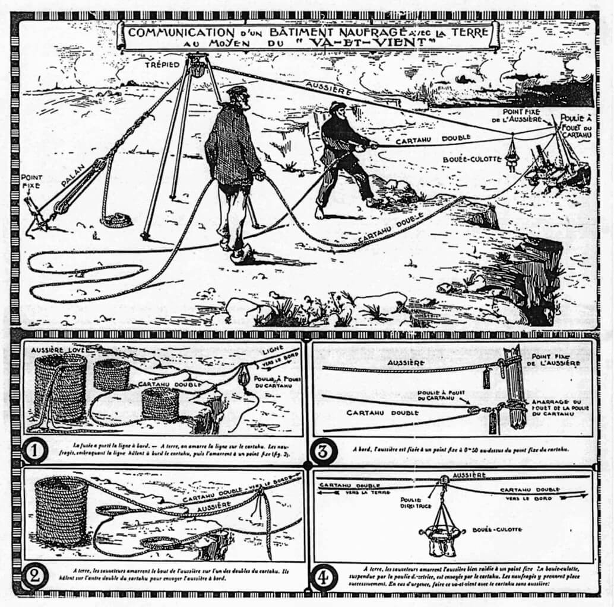
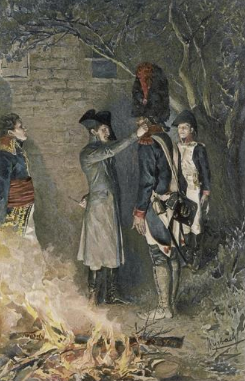
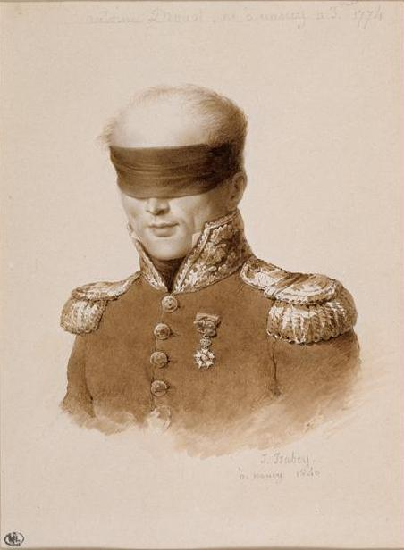

바우첸을 향하여 (6) - 나폴레옹보다 뛰어난 포병
게시: 2023-01-16T06:30:50+09:00
불타다 남은 러시아군의 부교를 낚아채간 프랑스군이 그걸 수리하는 모습은 강 건너를 순찰하는 코삭 기병들의 눈에도 잘 보였습니다. 아무리 러시아군이 별 생각이 없다고 해도 당장 그 근처에서 프랑스군이 도강을 시도하리라는 것은 뻔했습니다. 바로 2일 전 비트겐슈타인이 엘베 강변을 지킨다는 결정을 내렸을 때, 그 작전에 반대했던 사람들의 논리 중 하나는 '나폴레옹이 마치 A지점에서 강을 건너려는 듯 허장성세를 펼치다 멀리 떨어진 B지점에서 강을 건너버리면 어떻게 할 것인가'라는 것이었습니다. 그렇다고 이렇게 뻔히 보이는 도하 시도를 모른 척 할 수는 없었습니다. 드레스덴 노이슈타트에 남아있던 러시아군 수비대 지휘관인 밀로라도비치는 아침부터 여차하면 위비가우 강변으로 뛰어갈 만반의 준비를 갖추고 있었습니다. 프랑스군은 소규모 보병들이 이런저런 보트들에 분승하여 강을 건너오는 것으로 작전을 시작했습니다. 이들은 조용히 강을 건너자마자 미리 끌고온 밧줄을 당겨 엘베 강을 가로지르는 도르레 견인줄을 완성했고, 이를 통해 한꺼번에 약 400명의 병력을 태울 수 있는 거룻배...라기보다는 뗏목을 밧줄로 끌어당겨 본격적으로 병력 이동을 시작했습니다.

(강변 사이를 밧줄을 당겨 오가는 거룻배를 프랑스어로는 va-et-vient(바-에-비앙)이라고 합니다. 영어로 직역하면 go-and-come, 즉 '왔다리 갔다리' 정도이지요. 글자 그대로 병력 셔틀입니다. 이 그림에서는 견인식 거룻배가 아니라 해변에 좌초된 배와 해변과의 사이에 물자를 실어나를 수 있는 도르레를 va-et-vient이라고 묘사하고 있네요.) 이렇게 병력을 빼곡히 채우고 느릿느릿 움직이는 큼직한 뗏목은 아주 좋은 포격 연습 대상이었습니다. 러시아군은 프랑스군이 행동을 개시했다는 소식에 최대한 신속하게 포병대를 급파했고, 이 60문의 대포들은 강변의 숲 언저리에 자리를 잡고 신나게 대포알을 날리기 시작했습니다. 프랑스군의 위기였습니다. 당연히 나폴레옹도 이런 예측 가능한 위기에 대해 대응책을 준비해두고 있었습니다. 프랑스군이 도강을 시작할 때, 저 쪽 강변에서 러시아군 보병이 나타나든 포병이 나타나든 사실 이 쪽에서 대응할 유일한 방법은 바로 압도적인 포격 뿐이었습니다. 프랑스군은 무려 100문의 대포들이 미리 강변에 방열하고 있었고, 러시아군 대포들이 불이 뿜자 그 위치를 파악하고 잽싸게 대포병 포격을 시작했습니다. 소위 duel au canon, 즉 대포 간의 결투가 벌어진 셈이었습니다. 당시 나폴레옹도 인근의 버려진 탄약고에 임시 사령부를 차리고 직접 강변에서 이 작전을 감독하고 있었습니다. 나폴레옹은 본인의 병과인 포병에 대해 매우 자긍심이 강한 사람이었고 자신이 누구보다 더 뛰어난 포병 장교라고 자부하고 있었습니다. 황제의 신분이 있고 워낙 바빴으므로 실제 포대 방열 등에 대해 이러쿵저러쿵 참견을 하지는 않았습니다만, 이 도강 작전에서 가장 중요한 고비인 대포병 사격이 시작되자 당연히 그의 가슴 속에 살아있던 젊은 포병 장교가 들끓고 일어나기 시작했습니다. 그런데 나폴레옹이 보기에 프랑스 포병대의 배치가 매우 부적절했습니다. 당시 포병 기술로는 포격 정확도를 높일 수 있는 최선의 방법은 결국 사거리를 줄이는 것이었고, 그러자면 이쪽 강변 직선 거리에 포대를 방열해야 했습니다. 그러나 포격이 시작된 뒤에 보니 프랑스군 포병들은 너무 멀리 떨어진 브리스니츠 마을 좌우편 양쪽에 분산 방열되어 있었던 것입니다. 이 중요한 포병대의 지휘를 맡은 사람은 나폴레옹의 충복인 드루오(Antoine Drouot) 장군이었습니다. 그는 당장 드루오를 불러 그의 귀를 잡고 흔들며 저 꼴이 뭐냐며 화를 냈습니다.

(나폴레옹이 부하의 귀를 잡고 흔드는 것은 현대적인 기준에서 생각할 때처럼 굴욕적인 체벌은 아니었습니다. 나폴레옹은 상대가 장군이든 사병이든 칭찬하고자 하는 부하의 귀를 잡고 흔드는 것을 즐겨 했습니다. 따라서 드루오의 귀를 잡고 흔들며 야단을 쳤다는 것은 '자네답지 않게 저게 뭔 짓거리야 허허' 정도의 어감으로 보시면 됩니다. 그림은 1800년 이탈리아 전선에서 공로를 세운 일개 사병인 쿠아녜(Jean-Roch Coignet)를 불러 칭찬하는 나폴레옹의 모습입니다.) 그러나 드루오는 대수학자 라플라스가 극찬을 할 정도로 똑똑한 사람이었습니다. 곧 이어진 포격전을 보던 나폴레옹은 드루오가 자신보다 뛰어난 포병 전문가라는 것을 인정해야 했습니다. 드루오는 전날 면밀한 사전 정찰을 통해 러시아군 포병대가 대략 어디쯤 방열할 것이고 그에 대해 아군의 포병이 최소한의 피해를 보면서도 최대의 효과를 낼 수 있는 곳이 어디인지 잘 파악해놓고 있었습니다. 러시아군 포병대는 하나둘씩 빠르게 침묵으로 빠져들었고 반대로 나폴레옹의 광대뼈는 미소로 상승하기 시작했습니다.

(드루오는 기술적으로나 처신면에서 있어서나 매우 똑똑한 인물로서, 워털루 전투에서 나폴레옹의 근위대를 지휘할 정도로 나폴레옹에게 헌신하는 충성파였음에도 왕정복고 이후 반역죄로 재판에 넘겨지자 셀프 변론을 통해 무죄판결을 이끌어내고 군인 퇴역 연금까지 타낼 정도로 수완가였습니다. 그는 루이 필립 왕정 때 복원되어 귀족의 지위에 올라 명예를 누렸으나, 다만 말년에 건강이 좋지 못했고 병으로 완전히 실명하게 되어 집필 활동에도 차질을 겪었습니다. 이 그림은 그가 실명한 이후에 그려진 것입니다.)
그렇다고 프랑스군 포병대가 GPS나 레이저로 유도되는 스마트 포탄을 썼던 것은 아니었습니다. 따라서 드루오의 대포들이 러시아 포병들을 완전히 제압할 수는 없었고, 러시아군 포탄은 강 위의 프랑스 거룻배는 물론이고 나폴레옹의 임시 사령부까지 날아들었습니다. 실제로 나폴레옹 근처에도 몇 발이 떨어졌는데, 그 중 하나가 근처 창고의 목재 벽을 때려 박살을 내면서 큼직한 목재 파편 하나가 나폴레옹 머리 위를 아슬아슬하게 스쳐 지나갈 정도로 위태로운 순간도 있었습니다. 그러나 나폴레옹은 그 목재 파편을 주워들고 살펴보며 농담을 했습니다. 바로 몇 분 뒤에는 폭발탄 하나가 그의 십여 미터 뒤쪽에 도열해있던 이탈리아 연대와 그의 사이에 떨어져 폭발했습니다. 흑색 화약이 들어있던 당시 폭발탄은 요즘 포탄과는 달리 위력이 강하지 않았으므로 아무도 다치지 않았습니다만 당연히 이탈리아 병사들은 크게 움찔했습니다. 그러자 나폴레옹은 뒤를 돌아보며 이렇게 이탈리아어로 외쳤습니다. "Ha! Cujoni, non fa male!" (허, X끼들, 그거 아프지도 않잖아!) (여기서 cujoni라는 것은 'X알'의 복수형인데 이탈리아어에서도 비속어에 해당하는 표현이라고 합니다. 잊으시면 안 되는 것이 나폴레옹의 모국어는 프랑스어가 아니라 이탈리아어였고, 1807년 틸지트 회담에서 나폴레옹을 만나 이야기를 나눈 알렉산드르는 자신의 프랑스어가 나폴레옹의 프랑스어보다 더 완벽하다는 사실에 무척이나 긍지를 느꼈다고 합니다.) 이러는 와중에도 프랑스군 보병들은 속속 강을 건너 전투에 투입되었습니다. 오후 3시 즈음까지 러시아군 사상자가 1천에 달하게 되자, 밀로라도비치는 더 이상 버티지 못하고 후퇴를 시작했습니다. 원래 이렇게 프랑스군이 도하를 시작하면 마이센 남쪽은 러시아군이, 마이센 북쪽은 프로이센군이 담당하기로 되어 있었습니다. 그 계획은 어떻게 되었길래 밀로라도비치가 못 견디고 후퇴를 시작할 때까지 나타나지 않았을까요? 오전에 프랑스군이 여기서 진짜 본격적인 도강을 시작한다는 것이 분명해지자, 밀로라도비치는 원래 계획에 따라 총사령관인 비트겐슈타인에게는 물론 약 20km 떨어진 마이센 방면의 블뤼허에게도 직접 지원을 요청했습니다. 그리고 이 지원 요청서는 오후 5시 30분 경 블뤼허의 사령부에 도착했습니다. 그러나 이 편지는 결코 블뤼허의 손에 들어가지 못했습니다. 그 편지를 받아든 사람은 바로 그나이제나우였습니다.
Source : The Life of Napoleon Bonaparte, by William Milligan Sloane Napoleon and the Struggle for Germany, by Leggiere, Michael V https://www.plaisance-pratique.com/Les-aventures-de-Kerdubon?lang=fr
https://www.allposters.com/-st/F-De-Myrbach-Posters_c87187_.htm